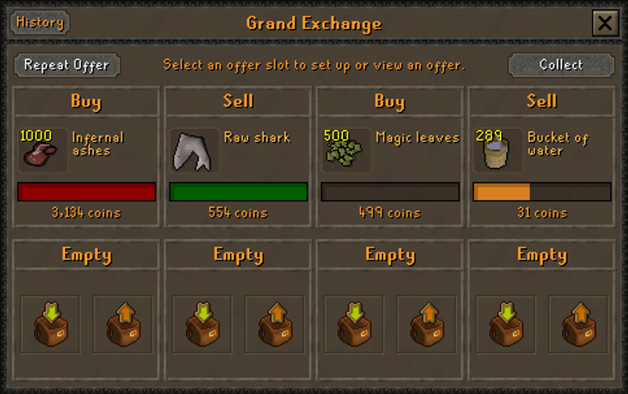
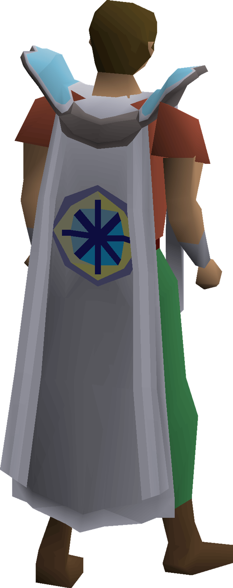

💰 I Want to Make Money
29 proven GP methods — from F2P to endgame boss runs.
• Low Level Money Making 2026 🆕
• F2P Money Making Ranked 🆕
• Zulrah Money Making Guide
• Vorkath Money Making Guide 🔒
• Grand Exchange Flipping Guide
29 Guides

⚔️ Skill Training Hub
Level up all 23 skills efficiently. Fastest, cheapest, AFK routes.
• Herblore 1-99 Training 2026 🆕
• Motherlode Mine — Best AFK Mining 30-99
• Hallowed Sepulchre — Best Agility XP
• Pyramid Plunder — Best Thieving 41-99
• F2P Leveling Roadmap 🆕
39 Guides

👹 Beast Slayer Hub
From Barrows to endgame raids. Gear, rotations, GP per hour.
• Boss Difficulty Tier List 2026 🆕
• God Wars Dungeon — 4 Bosses, 2M-8M GP/hr
• Inferno Guide — Ultimate Combat Challenge
• Sub-70 Combat Bossing 🆕
• Barrows Tunnel Optimization 🆕
26 Guides

📜 Quest Walkthroughs
From beginner to grandmaster. All key quests covered.
• Blood Moon Prep Checklist
• Dragon Slayer II
• Best Quests Per Skill
• Curse of the Empty Lord 🆕
18 Guides

🛠️ Fix My OSRS
Death recovery, ban appeals, boss fixes & lost item rescue.
• Near-BiS Still Dying? Boss Death Diagnosis
• Charged Item Lost on Death — Recovery
• Chain Ban? Linked Accounts Explained
• Account Hacked? Recovery Steps
31 Fix Guides

🏆 Elite Guides
Hardest skills & most profitable bossing. Runecrafting, Thieving, Wilderness bosses.
• Runecrafting 1-99 — Hardest Skill 🔥
• Thieving 1-99 — Best Money Skill
• Wilderness Bosses — High Risk / High Reward
• Full Profit & XP Breakdowns
3 Elite Guides

⚔️ After Tutorial Island — Next Steps NEW Beginner
Combat path, quest order & first money makers for brand-new accounts.
New Player Path
⚙️ Gear Hub NEW
Best-in-slot upgrades, gear progression, and loadout decisions from mid-game to endgame.
• Sang Staff BiS Impact 2026 🆕
• Nex Defense Changes 2026 🆕
• Mid-Game Money Roadmap 2026 🆕
• 90+ Skill Planning 2026 🆕
4 New Guides